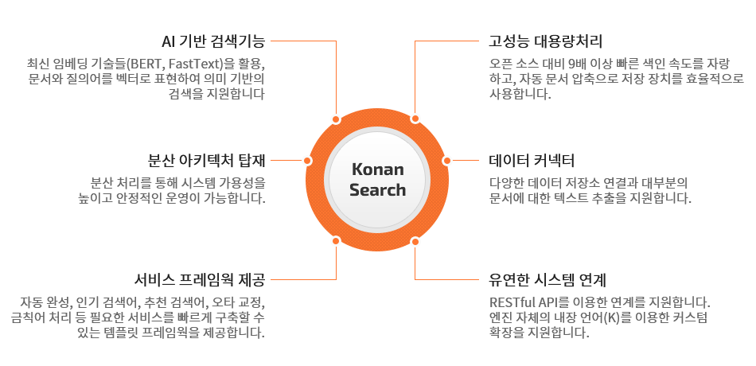
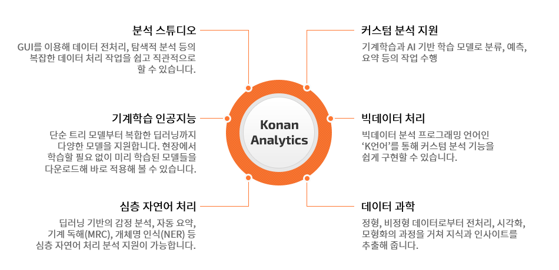

솔루션
Solution
검색엔진/AI챗봇/빅데이터분석
코리아탑솔루션즈의 솔루션을 소개합니다.
지능형 검색엔진
- GS인증
- 조달제품
사용자가 원하는 정보를 빠르고 정확하게 찾아주는 ‘AI기반 검색 엔진’입니다. ‘비정형 데이터 검색’은 물론
‘정형 데이터 집계 연산’, ‘벡터 타입 AI 데이터 검색’까지, 추상성 높은 검색 기술이 집약된 솔루션입니다.
검색엔진을 통한 업무효율성 향상
Konan Search 기반으로 구축된 초대용량 문서 중앙화 시스템 등을 통해 필요한 문서나 데이터를 찾는 시간을 대폭 줄여 업무 효율성을 높일 수 있습니다. 특히 모든 문서와 이메일 형식을 지원함으로써 누락되는 텍스트 없이 신속하고 정확한 검색결과를 제공받을 수 있습니다.
다양하고 스마트한 검색결과 구현
온라인 서비스는 사용자가 원하는 상품, 콘텐츠를 손쉽게
찾을 수 있도록 다양한 검색 조건과 정렬 방식을 제공해야 합니다.
코난 서치는 오픈소스 검색 엔진으로는 구현하기 어려웠던
‘연관어’, ‘검색어 자동완성’ 등 다양한 조건의 검색/정렬
기능들을 구현할 수 있습니다.
안정적이고 유연한 서비스 시스템
하루에 수십만 명의 사람들이 사용하는 서비스의 검색 시스템을 안정적으로 운영 할 수 있습니다. TB급 대용량 빅데이터에도 유연한 스케일 아웃이 가능하며, 자동 문서 압축기능을 통해 저장 장치를 효율적으로 사용할 수 있습니다.
AI 강화 빅데이터 검색엔진
AI챗봇
- GS인증
- 조달제품
고품질의 대화 서비스를 제공하여 비즈니스를 업그레이드하는 인공지능 기반 대화 에이전트입니다.
자연어 이해, 텍스트 마이닝, 머신러닝, 딥러닝 기술을 기반으로 고품질의 대화 서비스를 제공합니다.
업무 자동화를 통한 효율 증대
사용자의 의도에 가장 적합한 답변을 자동으로 제공하여 대면 업무의 부하를 줄이고 업무의 효율성을 높입니다.
비용 절감과 만족도 상승
단순 문의 유입을 낮추어 인력 및 비용 절감 효과를 높이고
최적의 답변을 통해 사용자의 만족도를 상승시킵니다.
즉각적인 상호작용과 체계적인 대응
쉽고 즉각적인 상호 작용과 체계적인 대응으로
고객 유지율(Customer retention)을 높여줍니다.
균일하고 일관된 고품질 답변 제공
상담원에게 필요한 정보를 신속하게 전달하여 일관되고 균일한
고품질의 답변을 고객에게 제공합니다.
구축비용을 획기적으로 감소시키는 동시에
심층 자연어 이해 기술을 통해 높은 품질의 대화 서비스를 제공합니다.
-
다큐먼트 AI
Q&A와 같은 정형 문서와 매뉴얼, 규정집과 같은 비정형 문서로부터 자동으로 대화 데이터를 구축하여 시간과 비용을 절감할 수 있습니다.
-
미리 훈련된 딥러닝 모델
미리 훈련된 딥러닝 모델(BERT)을 활용하여 추가적인 학습 없이도 의미 기반의 추론을 통해 적절한 답변을 제공합니다.
-
심층 자연어 이해
딥러닝 기반 의미 매칭 기술과 더불어 자연어 분석 및 이해 기술을 활용하여 사용자의 질문 의도를 파악하고 최적의 답변을 찾아 제시합니다. 이를 통해 질문에 대한 인식률(recall)과 답변의 정확도(precision) 모두를 만족시킵니다.
-
기계 독해
문서 구조화와 의미 기반 벡터 검색을 통해 문서 또는 단락에서 질문에 대한 답변 영역을 찾고 딥러닝 기계독해를 적용하여 적절한 답변을 제시합니다.
-
직관적인 연계 개발 도구
비주얼 대화 시나리오 편집기를 통해 최소한의 코딩으로 손쉽게 레거시들과 연계할 수 있습니다.
-
대화 품질 관리
대화 이력 관리, 대화 배치 테스트, 디자인/서비스 모드 지원으로 대화 품질을 향상시키고 유지할 수 있는 기능들을 제공합니다.
-
손쉬운 운영 관리
웹기반 관리기를 통해 성능 및 통계 모니터링, 백업 및 복구, 서비스 배포 등 대화 서비스 운영에 필요한 관리를 손쉽게 할 수 있습니다.
지능형 빅데이터 분석
- GS인증
- 조달제품
기계학습·인공지능·데이터과학 기술을 기반으로 정형·비정형의 데이터를 분석해 비즈니스 인사이트를 발견해주는
‘지능형 텍스트 애널리틱스 엔진’입니다.
업무생산성 향상· 객관적 결과 제공
Konan Analytics 인공지능 모델을 통해 업무 의사결정을 보조할 수 있습니다. 방송심의, 의료진단 예측, 정책검증과 같이 사람이 직접해야 하는 수작업을 최소화 하여 업무 생산성을 향상시키고, 주관성 개입 비율을 낮춰 공정성 시비를 줄일 수 있습니다.
심층 자연어처리 기반 데이터 분석
클러스터 아키텍처를 활용해 대용량의 데이터를 신속하게
분석할 수 있으며, 딥러닝, ‘감정분석, 자동요약, 기계독해,
개체명인식 등 심층 자연어처리를 통해 기존 룰 기반 방식보다
더 정확한 분석 결과를 받아볼 수 있습니다.
한눈에 볼 수 있는 분석결과
Konan Analytics는 그래프과 대시보드를 지원합니다. 차트, 네트워크맵 등 그래픽 요소를 통해 분석결과를 한 눈에 확인할 수 있으며, SNS, 웹사이트와 쉽게 연동, 공유할 수 있도록 API를 제공합니다.
비즈니스 인사이트 향상
비즈니스 데이터에서 주목해야 할 이슈어, 연관어를 제공받을 수
있습니다. 주요 이슈 순위변화, 주요 기간별 키워드를 추출하기
때문에 트렌드나 주요 현상 분석에 용이합니다.
지능형 텍스트 애널리틱스 엔진
